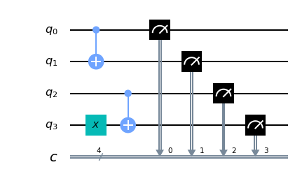
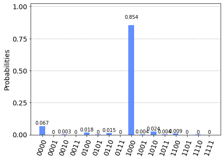

NOT and C-NOT quantum gates
The operators of traditional high-level programming languages are translated by the compilers into short sequences of machine language instructions
and in turn these instructions are implemented within microprocessors whose micro-instructions use logical and mathematical operators made directly at circuit level.
For example, in this snippet of code in C language
int v1, v2;
//….
int v = v1 ^ v2;v1 ^ v2 (i.e. the v1 xor v2 calculation performed bit by bit) is translated into assembly x86_64 as follows:mov eax, DWORD PTR [rbp-4]
xor eax, DWORD PTR [rbp-8]
mov DWORD PTR [rbp-12], eaxmov copies the value of variable v1 to the eax register,
the second instruction xor executes the exclusive (the xor) bit by bit between the eax register and the variable v2 and saves the result on the same eax register
and finally the last mov instruction assigns the value of the eax register (which contains the result of the xor bit by bit) to the variable v.The thing that is noted is that the xor is an instruction implemented directly in the microprocessor and executes the xor on 32-bit integers (the eax register contains 32 bits) and that in the processor there will be (at least) 32 microcircuits that perform the xor calculation, each circuit operating (in parallel and independently of the others) on a pair of bits (one from the register, the other from memory). In turn, each microcircuit that calculates the xor between two bits is composed of transistors properly connected and finally these transistors are made using the solid state physics that is at the base of semiconductors.
Beyond the technicalities, the thing that we want to put in evidence is that an operator of a language of high level (the operator ^ of C in this example) on an ordinary processor leans, in its lowest level of abstraction (inaccessible to the developer), on the physics of the solid state because such is the physicality of the underlying lower layer(that of the transistors, precisely).
A similar reasoning can be done in quantum programming: the purpose of this post is to show how two quantum operators, starting from a high-level language, are implemented using appropriate phenomena described by quantum mechanics.
In particular the post shows the quantum phenomena underlying the operators NOT (more correctly called Pauli-X gate) and C-NOT (NOT Controlled, also known as quantum xor).
The mathematical model of the qubit
The qubit is described mathematically as a two-dimensional complex Hilbert space. The canonical base of this space is indicated (using Dirac's notation) with
$$\{|0\rangle,|1\rangle\}$$
which written in the form of the base of the component vectors is
$$\{\begin{bmatrix} 1 \\ 0 \\ \end{bmatrix},\begin{bmatrix} 0 \\ 1 \\ \end{bmatrix}\}$$
and each element of the base corresponds to the classical bits 0 and 1 respectively.
As with any vector space, each space vector can be uniquely written as a linear combination of the base vectors
$$|\psi\rangle=\alpha|0\rangle + \beta|1\rangle$$
where $\alpha$ and $\beta$ are called amplitudes of probability and must be such that their squared modules (which are density of probability)
must satisfy the equality $|\alpha|^2 + |\beta|^2 = 1$
Quantum mechanics says that if you take a measurement (relative to the base) you can only get the state $|0\rangle$ (corresponding to bit 0)
with probability $|\alpha|^2$ or state $|1\rangle$ (corresponding to bit 1) with probability $|\beta|^2$.
The operator NOT
The quantum operator NOT, which from now on will be called with its most appropriate name Pauli-X gate acts on a single qubit
and its purpose is to invert the past qubit with respect to the canonical base (an operation that corresponds to a rotation with respect to the X-axis
on Bloch sphere, see Bloch sphere on Wikipedia)
Mathematically it is therefore necessary to find a hermetian and unitary matrix (because all quantum operators must be such)
that reverses states in such a way that:
$$\alpha|0\rangle + \beta|1\rangle \rightarrow \beta|0\rangle + \alpha|1\rangle$$
Such a matrix is
$$X=\left[\begin{matrix} 0 & 1 \\ 1 & 0 \end{matrix} \right]$$
That the $X$ matrix is hermetian is obvious: it contains only real elements and is symmetrical.
It is unitary because its conjugated transposition (which is also the transposition being present only real elements) coincides with its inverse
and verification is a simple calculation
$$XX^\dag=XX=\left[\begin{matrix} 0 & 1 \\ 1 & 0 \end{matrix} \right] \left[\begin{matrix} 0 & 1 \\ 1 & 0 \end{matrix} \right]= \left[\begin{matrix} 1 & 0 \\ 0 & 1 \end{matrix} \right] = I$$
Similarly, it is shown that $X^\dag X=I$ per cui vale $X^\dag=X^{-1}$
From a physical point of view the realization of the Pauli-X port depends on how the quantum computer is realized from the hardware point of view;
it is not the purpose of this post to enter into the engineering realization of qubits, but just to fix ideas, if for example the qubit was realized through the spin of an electron,
the Pauli-X gate would be made by causing a $\pi$ rotation around the X axis of the electron spin.
Test of Pauli-X gate on qubit in pure states
Observe the following snippet of Python code with Qiskit written to run inside a Jupyter Notebook using both the IBM 'qasm_simulator' and the IBM 'ibmq_london' quantum computer as backend.
q = QuantumRegister(3, 'q')
c = ClassicalRegister(3, 'c')
circuit = QuantumCircuit(q, c)
circuit.x(1)
circuit.x(2)
circuit.x(2)
circuit.measure(q, c)


Observing the result we can have the experimental proof of what stated above about the behaviour of the Pauli-X gates and we can conclude that in the absence of overlapping states the behavior of the Pauli-X gate is entirely comparable to the NOT operator of traditional languages (such as the
! operator of C).
In fact:
Test of Pauli-X gate on qubit in superposition of states
The superposition of states is a peculiarity of qubits and has no correspondence in ordinary bits.
In fact, next question is: what is the behavior of the qubit in superposition of states if the quantum operator NOT, that is the Pauli-X gate, is applied to it?
It is easily demonstrated that, given an qubit in superposition of states
$$|\psi\rangle=\alpha|0\rangle + \beta|1\rangle$$
the Pauli-X gate reverses that probability amplitudes, i.e. the qubit after a Pauli-X gate application will go into the state
$$not |\psi\rangle=\beta|0\rangle + \alpha|1\rangle$$
The demonstration is the following: writing the gate application to the vector in the form of the vectors of the components with respect to the canonical base
and performing a calculation step
$$X|\psi\rangle=\left[\begin{matrix} 0 & 1 \\ 1 & 0 \end{matrix} \right] \left[\begin{matrix} \alpha \\ \beta \end{matrix} \right] = \left[\begin{matrix} \beta \\ \alpha \end{matrix} \right] $$
and returning to the vector space of the qubits you get exactly $\beta|0\rangle + \alpha|1\rangle$, which is the inversion of probability amplitudes.
Switching to the computer, you would be tempted to use the Hadamard gate to put the qubit in a superposition of states; but for demonstration purposes it is not very useful
when applying the Hadamard gate to the $|0\rangle$ state, it happens that $\alpha$ and $\beta$ are both equal to $\frac{1}{\sqrt{2}}$.
and the inversion effect would not look good. Better then set $\alpha$ and $\beta$ with different values.
Note the following snippet of Python code with Qiskit written to run inside a Jupyter Notebook
using both the IBM simulator 'qasm_simulator' and the quantum computer 'ibmq_london' from IBM as a backend.
q = QuantumRegister(1, 'q')
c = ClassicalRegister(1, 'c')
circuit = QuantumCircuit(q, c)
circuit.ucrx([np.pi/3], [], 0)
circuit.measure(q, c)

Note: Given the stochastic nature of the training phase, your specific results may vary. Consider running the example a few times.
The operator
ucrx with argoment $\frac{\pi}{3}$ makes a rotation $\theta=\frac{\pi}{3}$ (i.e. 60°) around the $x$ axis on the qubit 0
so that $\alpha=\cos \frac{\theta}{2}=\cos \frac{\frac{\pi}{3}}{2}=\cos \frac{\pi}{6}=\frac{\sqrt{3}}{2}$
and therefore the probability density (which is the square of the amplitude) is $|\alpha|^2=\frac{3}{4}=$0.75 and necessarily the probability density $|\beta|^2=\frac{1}{4}=$0.25
and in fact if you go to measure qubit 0 you have a 75% chance of getting the state $|0\rangle$ and 25% of getting $|1\rangle$.Now you modify the program by adding a Pauli-X gate to follow the application of gate
ucrx.
Here is the code:q = QuantumRegister(1, 'q')
c = ClassicalRegister(1, 'c')
circuit = QuantumCircuit(q, c)
circuit.ucrx([np.pi/3], [], 0)
circuit.x(0)
circuit.measure(q, c)

from which you can clearly see the inversion effect of the probability amplitudes caused by the application of the Pauli-X gate: going to measure qubit 0 you have a 25% probability of getting the state $|0\rangle$ and 75% of getting $|1\rangle$.
Nota: Given the stochastic nature of the training phase, your specific results may vary. Consider running the example a few times.
It was said above that the Pauli-X gate rotates $\pi$ around the X axis of the Bloch sphere: programmatically the Pauli-X operator is therefore fully equivalent to the statement:
circuit.ucrx([np.pi], [], [i])The operator C-NOT
By again making an ideal parallel with a high-level programming language, imagine that you have the following snippet of C code:
bool control, target;
//….
if (control)
target = !target;cmp BYTE PTR [rbp-1], 0
je .L2
xor BYTE PTR [rbp-2], 1
.L2:The first instruction
cmp compares the value of the variable with the constant 0 and sets a processor flag to 1 if the comparison results in equality,
otherwise that flag is set to 0;
the second instruction je is a conditional jump (in the sense of controlled): it jumps to L2 if that flag is 0 (and therefore if the variable c is worth 0, i.e. false)
while the third instruction executes a xor between the variable b and the value 1 (and for Boolean algebra this is a not) and then saves the result on the variable b itself.Again a relatively simple high-level language construct is implemented with a small sequence of instructions in machine language and in turn each instruction, realized in microprogamming, uses the internal circuitry of the processor (in this case the comparison flag and the conditional jump). in turn built with (transient) semiconductors based on solid state physics. On quantum spin computers, it has been seen that the NOT (or rather Pauli-X) port is implemented through spin rotation; the question now is whether there is a basic quantum mechanism to rely on to implement a controlled NOT.
Before answering this question it is appropriate to go into the details of the C-NOT operator from a mathematical point of view.
The truth table of the controlled NOT construct on a pair of ordinary bits is as follows:
| input | output | ||
| control | target | control | target |
| 0 | 0 | 0 | 0 |
| 0 | 1 | 0 | 1 |
| 1 | 0 | 1 | 1 |
| 1 | 1 | 1 | 0 |
The truth table of the quantum construct C-NOT on a qubit pair without superposition of states is of course as follows:
| input | output | ||
| control | target | control | target |
| $|0\rangle$ | $|0\rangle$ | $|0\rangle$ | $|0\rangle$ |
| $|0\rangle$ | $|1\rangle$ | $|0\rangle$ | $|1\rangle$ |
| $|1\rangle$ | $|0\rangle$ | $|1\rangle$ | $|1\rangle$ |
| $|1\rangle$ | $|1\rangle$ | $|1\rangle$ | $|0\rangle$ |
For example, if you look at the penultimate entry in the table, the input vectors are $|1\rangle$ and $|0\rangle$ as the canonical base, you get the two component vectors $$\begin{bmatrix} 0 \\ 1 \\ \end{bmatrix}, \begin{bmatrix} 1 \\ 0 \\ \end{bmatrix}$$ and concatenating them you get the following vector $$\begin{bmatrix} 0 \\ 1 \\ 1 \\ 0 \\ \end{bmatrix}$$ and multiplying the matrix by this vector: $$ \left[\begin{matrix} 1 & 0 & 0 & 0 \\ 0 & 1 & 0 & 0 \\ 0 & 0 & 0 & 1 \\ 0 & 0 & 1 & 0 \end{matrix} \right] \begin{bmatrix} 0 \\ 1 \\ 1 \\ 0 \\ \end{bmatrix} = \begin{bmatrix} 0 \\ 1 \\ 0 \\ 1 \\ \end{bmatrix} $$ which corresponds in the initial vector space to the vector pair ${|1\rangle}$ e ${|1\rangle}$ as you wanted to demonstrate.
Similarly for all other items in the truth table it is shown that the $CNOT$ matrix actually implements the C-NOT operator.
For the $CNOT$ matrix to be a valid quantum operator it must be hermetian and unitary. That it is hermetian is evident: it contains only real elements and is symmetrical.
It is unitary because its conjugated transposition (which is also the transposition being present only real elements) coincides with its inverse and the verification is a simple calculation $$CNOT \cdot CNOT^\dag=CNOT \cdot CNOT=\left[\begin{matrix} 1 & 0 & 0 & 0 \\ 0 & 1 & 0 & 0 \\ 0 & 0 & 0 & 1 \\ 0 & 0 & 1 & 0 \end{matrix} \right] \left[\begin{matrix} 1 & 0 & 0 & 0 \\ 0 & 1 & 0 & 0 \\ 0 & 0 & 0 & 1 \\ 0 & 0 & 1 & 0 \end{matrix} \right]= \left[\begin{matrix} 1 & 0 & 0 & 0 \\ 0 & 1 & 0 & 0 \\ 0 & 0 & 1 & 0 \\ 0 & 0 & 0 & 1 \end{matrix} \right] = I$$ Similarly, it is shown that $CNOT^\dag \cdot CNOT=I$ which is $CNOT^\dag=CNOT^{-1}$
The time has come to answer the outstanding question, i.e. whether there is a quantum phenomenon on which to build the C-NOT construct; in fact, the great advantage of quantum computation compared to traditional computation is that of being able to apply operators to qubits when they are in a superposition of states; in order for the C-NOT operator to be applicable to qubits in such a situation without making any measurement (which would collapse into qubits in a pure state), it must be realized natively exploiting some quantum phenomenon involving two qubits: such phenomenon exists, and it is called entanglement. (for more information see Quantum entanglement on Wikipedia)
Test of C-NOT gate on qubits in pure states
Note the following snippet of Python code with Qiskit written to run inside a Jupyter Notebook using both the IBM simulator 'qasm_simulator' and the quantum computer 'ibmq_london' from IBM as a backend.
q = QuantumRegister(4, 'q')
c = ClassicalRegister(4, 'c')
circuit = QuantumCircuit(q, c)
circuit.cx(0, 1)
circuit.x(3)
circuit.cx(2, 3)
circuit.measure(q, c)

and whose result executed with a number of shots=8192 on the IBM 'qasm_simulator' is the following:

which is fully equivalent to the result obtained with the simulator unless there are small differences in the probability distribution attributable to noise.Observing the result we can have the experimental proof of what stated above about the behaviour of the C-NOT gate with regard to the first two entries of the truth table shown above: in fact the 4 qubits input corresponds to the inputs of the first two entries of the table, (${|0\rangle}$ e ${|0\rangle}$ for the first row and ${|0\rangle}$ e ${|1\rangle}$ for the second row) and as far as the output is concerned, the following applies:
The following code fragment:
q = QuantumRegister(4, 'q')
c = ClassicalRegister(4, 'c')
circuit = QuantumCircuit(q, c)
circuit.x(0)
circuit.cx(0, 1)
circuit.x(2)
circuit.x(3)
circuit.cx(2, 3)
circuit.measure(q, c)

while the result always executed with a number of shots=8192 on the IBM quantum computer 'ibmq_london' is the following:
which is fully equivalent to the result obtained with the simulator unless there are small differences in the probability distribution attributable to noise.
Observing the result we can have the experimental proof of what stated above about the behaviour of the C-NOT gate with regard to the last two entries of the truth table shown above: in fact the 4 qubits input corresponds to the inputs of the last entries of the table, (${|1\rangle}$ e ${|0\rangle}$ for the penultimate row and ${|1\rangle}$ e ${|1\rangle}$ for the last row) and as far as the output is concerned, the following applies:
It is therefore possible to conclude that in the absence of superposition of states the behaviour of the C-NOT gate is completely comparable to the NOT-controlled construct of traditional languages.
Test of C-NOT gate on qubits in superposition of states
We now ask ourselves the following question: what is the behavior of the C-NOT gate applied to two qubits in superposition of states?
Given two qubits, the first of control and the second of target in entanglement and superposition of states
$$q _0=\alpha|0\rangle + \beta|1\rangle$$
$$q _1=\gamma|0\rangle + \delta|1\rangle$$
and rotate $\theta=\frac{\pi}{3}$ (i.e. 60°) around the $x$ axis on the qubit 0 and then $\alpha=\cos \frac{\theta}{2}=\cos \frac{\frac{\pi}{3}}{2}=\cos \frac{\pi}{6}=\frac{\sqrt{3}}{2}$
and therefore the probability density $|\alpha|^2=\frac{3}{4}=0.75$ and necessarily the probability density $|\beta|^2=\frac{1}{4}=0.25$.
In addition, a rotation of $\theta=\frac{\pi}{6}$ (i.e. 30°) around the $x$ axix on the qubit 1 and then $\gamma=\cos \frac{\theta}{2}=\cos \frac{\frac{\pi}{6}}{2}=\cos \frac{\pi}{12}=\frac{\sqrt{6} + \sqrt{2}}{4}$
and therefore the probability density $|\gamma|^2=\frac{2 + \sqrt{3}}{4} \simeq 0.933013$ and necessarily the probability density $|\delta|^2=\frac{2 + \sqrt{3}}{4} \simeq 0.0669873$.
Moving on to the computer, look at the following snippet of Python code with Qiskit written to run inside a Jupyter Notebook
using both the IBM simulator 'qasm_simulator' and the quantum computer 'ibmq_london' from IBM as a backend.
q = QuantumRegister(2, 'q')
c = ClassicalRegister(2, 'c')
circuit = QuantumCircuit(q, c)
circuit.ucrx([np.pi/3], [], 0)
circuit.ucrx([np.pi/6], [], 1)
circuit.cx(0, 1)
circuit.measure(q[1], c[1])


The output of the program consists in measuring qubit 1 (the target): the probability of getting $|0\rangle$ on qubit 1 output is given by the sum of the first and fourth rows of the truth table.
The probability of the first line is given by the product of the probability of qubit 0 to be $|0\rangle$ (which we know to be 0.75) and the probability of qubit 1 to be $|0\rangle$ (which we know to be about $0.933013$) so about $0.699760$.
The probability of the fourth line is given by the product of the probability of qubit 0 to be $|1\rangle$ (which we know to be 0.25) for the probability of qubit 1 to be $|1\rangle$ (which we know to be about $0.066987$) so about $0.016746$.
Summing the two probabilities, we calculate the probability of getting $|0\rangle$ on qubit 1 output which is $0.699760 + 0.016746 = 0.716220$ which is what is obtained experimentally (unless small deviations due to stochastic nature). Similarly, it is calculated that the probability of obtaining $|1\rangle$ on qubit 1 output is equal to $0.283780$, very close to the experimentally determined probability.
Media
| Type | Title |
|---|---|
| Qubit e spin-up spin-down (audio in Italian) |
Download of the complete code
The complete code is available at GitHub.
These materials are distributed under MIT license; feel free to use, share, fork and adapt these materials as you see fit.
Also please feel free to submit pull-requests and bug-reports to this GitHub repository or contact me on my social media channels available on the top right corner of this page.